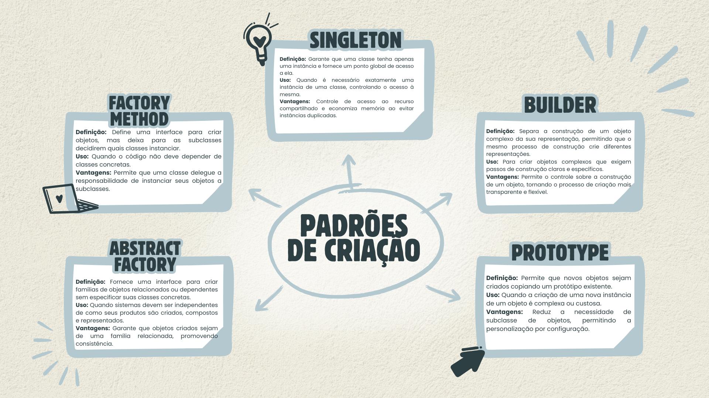

Padrões de criação
O professor Hugo Feitosa propôs a criação de um material para fixar os conteúdos abordados em sala de aula. Entre as opções, foi sugerido o desenvolvimento de um mapa mental, e optei por essa abordagem para consolidar melhor o tema. O mapa mental é uma ferramenta eficaz, especialmente útil para revisões.
O mapa mental foi elaborado com base nos cinco padrões de criação mais conhecidos e, consequentemente, utilizados: Singleton, Builder, Prototype, Factory e Abstract Factory:
